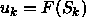
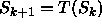
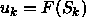
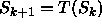
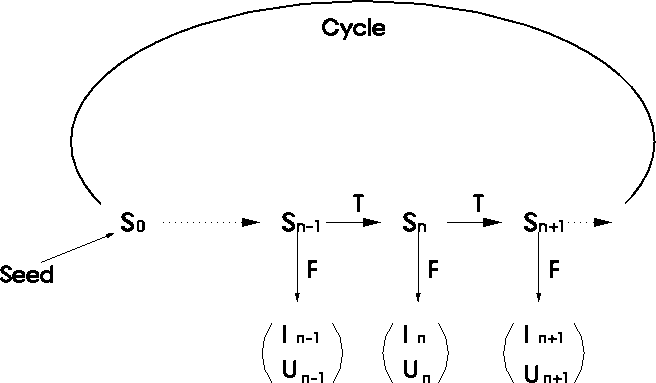

There is a conflict between the requirements of reproducibility and
randomness. On a finite memory computer, at any step k in the sequence
the PRNG has an internal state specifiable conceptually by an
integer  , where the size of this integer is not necessarily
related to the word length of the computer. For each state S in the
sequence, there is a mapping that gives a random number the user sees,
. We also have an iteration process to determine the
next state of the sequence from the current state, .
All PRNGs can be
classified by the internal state space, the mapping, and the
iteration.
The sequence is defined once we have specified the initial
starting state known as the seed.
Fig.
, where the size of this integer is not necessarily
related to the word length of the computer. For each state S in the
sequence, there is a mapping that gives a random number the user sees,
. We also have an iteration process to determine the
next state of the sequence from the current state, .
All PRNGs can be
classified by the internal state space, the mapping, and the
iteration.
The sequence is defined once we have specified the initial
starting state known as the seed.
Fig.  illustrates the procedure for obtaining
pseudo-random sequences described above.
illustrates the procedure for obtaining
pseudo-random sequences described above.

Figure: A pseudo-random sequence is defined by the internal state
space, the mapping, the iteration, and the initial state.
Now let us return to the possible conflict between the properties of reproducibility and randomness: if it is reproducible then it cannot be perfectly random since knowing the sequence will make betting on the next number easy. How do we resolve the incompatibility between the two properties? In common sense terms, we mean a good PRNG is one whose numbers are uncorrelated as long as you do not explicitly try to back out the mapping and iteration processes and use that to predict another member of the sequence. PRNG's have not been designed to be good cryptographic sequences.